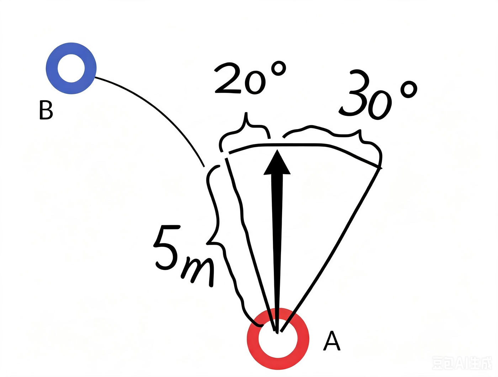
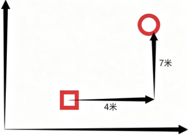
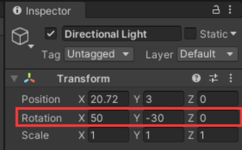
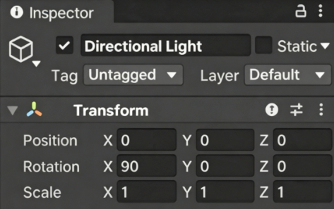

// 基础：向量运算（脱离引擎，纯数学）
(double x, double y) Add((double, double) a, (double, double) b) => (a.Item1 + b.Item1, a.Item2 + b.Item2);
(double x, double y) Sub((double, double) a, (double, double) b) => (a.Item1 - b.Item1, a.Item2 - b.Item2);
(double x, double y) Mul((double, double) a, double k) => (a.Item1 * k, a.Item2 * k);
double Dot((double, double) a, (double, double) b) => a.Item1 * b.Item1 + a.Item2 * b.Item2;
double Len((double, double) a) => Math.Sqrt(Dot(a, a));
(double, double) Norm((double, double) a) { var l = Len(a); return l < 1e-9 ? (0, 0) : Mul(a, 1 / l); }
var p = (3.0, 4.0);
var q = (1.5, -2.0);
Console.WriteLine($"p={p} |p|={Len(p):F3} 归一化后={Norm(p)}");
Console.WriteLine($"q={q} p+q={Add(p, q)} p-q={Sub(p, q)} p*2={Mul(p, 2)}");
Console.WriteLine($"点积 p·q={Dot(p, q):F3}");
var n = Norm(p);
double proj = Dot(q, n);
Console.WriteLine($"q 在 p 方向上的投影长度={proj:F3}，投影向量={Mul(n, proj)}");
double cos = Dot(Norm(p), Norm(q));
Console.WriteLine($"夹角余弦={cos:F4} 夹角={Math.Acos(Math.Clamp(cos, -1, 1)) * 180 / Math.PI:F1}°");
Console.WriteLine(cos > 0 ? "同向（点积>0），可用于判断「敌人在我前方」" : "反向（点积<0），在身后");1-3D 数学基础
01 数学计算公共类 Mathf
知识点一 Mathf和Math
Math是C#中封装好的用于数学计算的工具类 —— 位于System命名空间中
Mathf是Unity中封装好的用于数学计算的工具结构体 —— 位于UnityEngine命名空间中
他们都是提供来用于进行数学相关计算的知识点二 他们的区别
Mathf 和 Math中的相关方法几乎一样
Math 是C#自带的工具类 主要就提供一些数学相关计算方法
Mathf 是Unity专门封装的，不仅包含Math中的方法，还多了一些适用于游戏开发的方法
所以我们在进行Unity游戏开发时
使用Mathf中的方法用于数学计算即可知识点三 Mathf中的常用方法——一般计算一次
1.π
1.π - PI
print(Mathf.PI);2.取绝对值 - Abs |-5|
print(Mathf.Abs(-10)); |-10|=10
print(Mathf.Abs(-20)); |-20|=20
print(Mathf.Abs(1));3.向上取整 - CeilToInt- 1.3f变2
float f = 1.3f;
int i = (int)f;
print(i);
print(Mathf.CeilToInt(f));
print(Mathf.CeilToInt(1.00001f));
1.3f 向上取整就是 24.向下取整 - FloorToInt -不要小数位
print(Mathf.FloorToInt(9.6f));
9.6f向下取整就是 95.钳制函数 - Clamp
print(Mathf.Clamp(10, 11, 20)); 数值 < min → 返回最小值 min
待限制数字 10，小于最小值 11 → 输出：11
print(Mathf.Clamp(21, 11, 20)); 数值 > max → 返回最大值 max
待限制数字 21，大于最大值 20 → 输出：20
print(Mathf.Clamp(15, 11, 20)); 数值在中间 → 返回自身原值
待限制数字 15，在 11~20 中间 → 输出：156.获取最大值 - Max -取最大的
print(Mathf.Max(1, 2, 3, 4, 5, 6, 7, 8));
print(Mathf.Max(1, 2));7.获取最小值 - Min
print(Mathf.Min(1, 2, 3, 4, 545, 6, 1123, 123));
print(Mathf.Min(1.1f, 0.4f));8.一个数的n次幂 - Pow
print("一个数的n次方" + Mathf.Pow(4, 2)); 4*4=16
print("一个数的n次方" + Mathf.Pow(2, 3)); 2*2*2=89.四舍五入 - RoundToInt
print("四舍五入" + Mathf.RoundToInt(1.3f));
print("四舍五入" + Mathf.RoundToInt(1.5f));10.返回一个数的平方根 - Sqrt
print("返回一个数的平方根" + Mathf.Sqrt(4)); 根号4 =2
print("返回一个数的平方根" + Mathf.Sqrt(16)); =4
print("返回一个数的平方根" + Mathf.Sqrt(64)); =811.判断一个数是否是2的n次方 - IsPowerOfTwo
print("判断一个数是否是2的n次方" + Mathf.IsPowerOfTwo(4)); 返回 true
print("判断一个数是否是2的n次方" + Mathf.IsPowerOfTwo(8)); 返回 true
print("判断一个数是否是2的n次方" + Mathf.IsPowerOfTwo(3)); 返回 false
print("判断一个数是否是2的n次方" + Mathf.IsPowerOfTwo(1)); 返回 true 2的0次方=112.判断正负数 - Sign 正数返回1 负数返回-1,0返回0
print("判断正负数" + Mathf.Sign(0)); 0
print("判断正负数" + Mathf.Sign(10)); 1
print("判断正负数" + Mathf.Sign(-10)); -1
print("判断正负数" + Mathf.Sign(3)); 1
print("判断正负数" + Mathf.Sign(-2)); -1知识点四 Mathf中的常用方法——一般不停计算
float start = 0;
float result = 0;
float time = 0;
// Update is called once per frame
void Update()
{
插值运算 - Lerp
Lerp函数公式
result = Mathf.Lerp(start, end, t);
t为插值系数，取值范围为 0~1
result = start + (end - start)*t插值运算用法一
效果：先快后慢，无限靠近 10，永远到不了 10
自身 Lerp：缓动、减速趋近，到不了终点；适合平滑跟随（相机跟随、物体追踪）
每帧改变start的值——变化速度先快后慢，位置无限接近，但是不会得到end位置
start = Mathf.Lerp(start, 10, Time.deltaTime);
start = Mathf.Lerp(当前对象的坐标,目标对象的坐标 , 速度);using System.Collections;
using System.Collections.Generic;
using UnityEngine;
/// <summary>
/// 方式一：先快后慢 缓动跟随
/// 特点：越靠近目标移动越慢，无限接近但不会精准停在目标点
/// </summary>
public class Follow_Smooth : MonoBehaviour
{
[Header("跟随设置")]
public Transform target; // 跟随目标
public float moveSpeed; // 移动快慢系数
private Vector3 tempPos; // 临时坐标容器
void Update()
{
// 获取物体当前坐标
tempPos = transform.position;
// 分别对 X/Y/Z 三个轴做插值移动
tempPos.x = Mathf.Lerp(tempPos.x, target.position.x, Time.deltaTime * moveSpeed);
tempPos.y = Mathf.Lerp(tempPos.y, target.position.y, Time.deltaTime * moveSpeed);
tempPos.z = Mathf.Lerp(tempPos.z, target.position.z, Time.deltaTime * moveSpeed);
// 把计算后的坐标赋值给物体，完成移动
transform.position = tempPos;
}
}插值运算用法二
：匀速插值，时间到了精准到达终点
时间变量 Lerp：匀速运动，时间满 1 精准到达；适合固定时长动画（3 秒移动到目标点）
每帧改变t的值——变化速度匀速，位置每帧接近，当t>=1时，得到结果
time += Time.deltaTime;
result = Mathf.Lerp(start, 10, time);
结果 = Mathf.Lerp(当前数值, 目标数值, 变化系数)using System.Collections;
using System.Collections.Generic;
using UnityEngine;
/// <summary>
/// 方式二：匀速直线移动
/// 特点：起点、终点固定，全程匀速，时间足够后精准到达目标
/// 目标位置改变时，会重新开始一段匀速移动
/// </summary>
public class Follow_Uniform : MonoBehaviour
{
[Header("跟随设置")]
public Transform target; // 跟随目标
private Vector3 targetOldPos; // 记录目标上一次的位置
private Vector3 moveStartPos; // 本次移动的起始位置
private float lerpTimer; // 移动累计时间
private Vector3 tempPos; // 临时坐标容器
void Update()
{
// 检测目标位置是否变化，变化则重置移动状态
if (targetOldPos != target.position)
{
lerpTimer = 0f;
targetOldPos = target.position;
moveStartPos = transform.position;
}
// 每帧累加时间
lerpTimer += Time.deltaTime;
// 基于固定起点、终点做匀速插值
tempPos.x = Mathf.Lerp(moveStartPos.x, targetOldPos.x, lerpTimer);
tempPos.y = Mathf.Lerp(moveStartPos.y, targetOldPos.y, lerpTimer);
tempPos.z = Mathf.Lerp(moveStartPos.z, targetOldPos.z, lerpTimer);
// 更新物体位置
transform.position = tempPos;
}
}02 三角函数
----------------------------------------------------------------------------------
数学层面：弧度是「自然单位」
角度是人定的单位，人为规定：一圈 = 360 度。
所有物理、图形学、微积分推导默认使用弧度。游戏物理、相机旋转、向量运算、四元数全部依赖微积分，自然选用弧度。
----------------------------------------------------------------------------------
知识点一 弧度、角度相互转化
//弧度转角度
float rad = 1;
float anger = rad * Mathf.Rad2Deg;//弧度转角度
print(anger);
//角度转弧度
anger = 1;
rad = anger * Mathf.Deg2Rad; //角度转弧度
print(rad);知识点二 三角函数 传入的参数是弧度
//注意：Mathf中的三角函数相关函数，传入的参数需要时弧度值
print(Mathf.Sin(30 * Mathf.Deg2Rad));//0.5
print(Mathf.Cos(60 * Mathf.Deg2Rad));//0.5知识点三 反三角函数
//注意：反三角函数得到的结果是 正弦或者余弦值对应的弧度
rad = Mathf.Asin(0.5f);
print(rad * Mathf.Rad2Deg);
rad = Mathf.Acos(0.5f);
print(rad * Mathf.Rad2Deg);03 坐标系
世界坐标系
目前学习的和世界坐标系相关的
this.transform.position;
this.transform.rotation;
this.transform.eulerAngles;
this.transform.lossyScale; //全局缩放，只能得不能改
修改他们会是相对世界坐标系的变化物体坐标系
相对父对象的物体坐标系的位置本地坐标相对坐标
this.transform.localPosition;
this.transform.localEulerAngles;
this.transform.localRotation;
this.transform.localScale;
修改他们会是相对父对象物体坐标系的变化屏幕坐标系
最大宽高 Screen.width Screen.height 得到屏幕宽高
Input.mousePosition
Screen.width;
Screen.height;视口坐标系
摄像机上的视口范围坐标转换相关
世界转本地
this.transform.InverseTransformDirection
this.transform.InverseTransformPoint
this.transform.InverseTransformVector
本地转世界
this.transform.TransformDirection
this.transform.TransformPoint
this.transform.TransformVector
世界转屏幕
Camera.main.WorldToScreenPoint
屏幕转世界
Camera.main.ScreenToWorldPoint
世界转视口
Camera.main.WorldToViewportPoint
视口转世界
Camera.main.ViewportToWorldPoint
视口转屏幕
Camera.main.ViewportToScreenPoint
屏幕转视口
Camera.main.ScreenToViewportPoint;2-3D 数学向量
01 Vector3 向量的模长 和单位向量
模长相当于可以得到 两点之间的距离 单位向量 主要是用来进行移动计算的 它不会影响我们想要的移动效果
知识点一 向量
三维向量 - Vector3
Vector3有两种几何意义
1.位置 —— 代表一个点
print(this.transform.position);
2.方向 —— 代表一个方向
print(this.transform.forward);
print(this.transform.up);
Vector3 v = new Vector3(1, 2, 3);
Vector2 v2 = new Vector2(1, 2);知识点二 两点决定一向量
A和B此时 几何意义 是两个点
Vector3 A = new Vector3(1, 2, 3);
Vector3 B = new Vector3(5, 1, 5);
求向量
此时 AB和 BA 他们的几何意义 是两个向量
Vector3 AB = B - A; 求A->B 就是终点-起点
Vector3 BA = A - B; 求B->A 就是终点-起点知识点三 零向量和负向量
print(Vector3.zero);
print(Vector3.forward);
print(-Vector3.forward);//加上 - 号就是 反方向知识点四 向量的模长
向量的模长就是向量的长度 ，向量是由两个点算出，所以向量的模长就是两个点的距离
print(AB.magnitude); //通过AB向量 得到模长
Vector3 C = new Vector3(5, 6, 7);
print(C.magnitude); //通过 点C 得到模长
print(Vector3.Distance(A, B)); //通过2点 得到之间的距离 = 模长知识点五 单位向量
单位向量 = (x/模长, y/模长, z/模长）
print(AB.normalized); //通过unity封装的方法 得到 AB向量 的单位向量
print(AB / AB.magnitude); //通过自己计算 AB向量的 （X，Y,Z）/模长 得到 单位向量总结
1.Vector3这边变量 可以表示一个点 也可以表示一个向量 具体表示什么 是根据我们的具体需求和逻辑决定
2.如何在Unity里面得到向量 重点减起点 就可以得到向量 点C也可以代表向量 代表的就是 OC向量 O是坐标系原点
3.得到了向量 就可以利用 Vector3中提供的 成员属性 得到模长和单位向量
4.模长相当于可以得到 两点之间的距离 单位向量 主要是用来进行移动计算的 它不会影响我们想要的移动效果
02 Vector3向量的加减乘除
2 个向量 位置+位置 是没有意义的
this.transform.position += new Vector3(1, 2, 3);
this.transform.Translate(Vector3.forward * 5);向量-位置 没有任何意义
this.transform.position -= new Vector3(1, 2, 3);
this.transform.Translate(-Vector3.forward * 5);this.transform.localScale *= 2;
this.transform.localScale /= 2;03 Vector3向量点乘（判断前后）
点乘能干啥（只分前后），短板：完全分不清左边还是右边。
前两个参数 分别是 起点 终点
Debug.DrawLine(
this.transform.position, this.transform.position + this.transform.forward, Color.red);前两个参数 分别是 起点 方向
Debug.DrawRay(this.transform.position, this.transform.forward, Color.white);Vector3 提供了计算点乘的方法
Debug.DrawRay(this.transform.position, this.transform.forward, Color.red);
Debug.DrawRay(
this.transform.position, target.position - this.transform.position, Color.red);
得到两个向量的点乘结果
向量 a 点乘 AB 的结果
float dotResult = Vector3.Dot(
this.transform.forward, target.position - this.transform.position);
if( dotResult >= 0 )
{
print("它在我前方");
}
else
{
print("它在我后方");
}步骤
1.用单位向量算出点乘结果
dotResult = Vector3.Dot(
this.transform.forward, (target.position - this.transform.position).normalized);
2.用反三角函数得出角度
print("角度-" + Mathf.Acos(dotResult) * Mathf.Rad2Deg);unity 封装好的求夹角的方法
Vector3.Angle(this.transform.forward, target.position - this.transform.position));只需要求 22.5 度 ， 就是求 A 点乘 AB 向量 然后转乘角度。
publicclassFindEnemy:MonoBehaviour
{
publicTransformB;
voidUpdate()
{
if(Vector3.Distance(this.transform.position,B.transform.position)<=5)
{
点乘的知识：
第一步算出点乘结果（方向向量） 求角度要把求向量的单位向量（.normalized就是去单位向量）
floatdotResult=Vector3.Dot(this.transform.forward,(B.transform.position-this.transform.position).normalized);
第二步通过反余弦函数算出夹角
if(Mathf.Acos(dotResult)*Mathf.Rad2Deg<=22.5f)
{
print("发现入侵者");
}
---------------------------------------------------------------------------------------
if(Vector3.Distance(this.transform.position,B.transform.position)<=5&&
Vector3.Angle(
this.transform.forward,B.transform.position-this.transform.position)<=22.5f)
{
print("发现入侵者");
}
}
04 Vector3向量叉乘（判断左右）
叉乘能干啥（只分左右），短板：分不清前后。
print(Vector3.Cross(A.position,B.position)); //是计算B相对于A的位置，就是后者相对前者假设向量A和B都在XZ平面上，向量A叉乘向量B
y大于0证明B在A右侧
y小于0证明B在A左侧
------------------------------------------------------------------------------------
Vector3C=Vector3.Cross(A.position,B.position);
if(C.y>0)
{
print("B在A的右侧");
}
else
{
print("B在A的左侧");
}
------------------------------------------------------------------------------------
Vector3C=Vector3.Cross(B.position,A.position);
if(C.y>0)
{
print("A在B的右侧");
}
else
{
print("A在B的左侧");
}
| 练习题1. 判断一个物体 B 位置再另一个物体 A 的位置的左上，左下，右上，右下哪个方位2. 当一个物体 B 在物体 A 左前方 20 度角或右前方 30 度范围内，并且离 A 只有 5 米距离时，在控制台打印 “发现入侵者” | |
 |
usingSystem.Collections;
usingSystem.Collections.Generic;
usingUnityEngine;
publicclassFindEnemy2:MonoBehaviour
{
publicTransformA;
publicTransformB;
privatefloatdotResult;
privateVector3crossResult;
voidUpdate()
{
//第一题
dotResult=Vector3.Dot(A.forward,B.position-A.position);
crossResult=Vector3.Cross(A.forward,B.position-A.position);
//判断前后
if(dotResult>=0)
{
//右侧
if(crossResult.y>=0){print("右前");}
//左侧
else{print("左前");}
}
else
{
//右侧
if(crossResult.y>=0){print("右后");}
//左侧
else{print("左后");}
}
//第二题
if(Vector3.Distance(A.position,B.position)<=5)
{
if(crossResult.y>=0&&Vector3.Angle(A.forward,B.position-A.position)<=30||crossResult.y<0&&Vector3.Angle(A.forward,B.position-A.position)<=20)；
{
print("发现入侵者");
}
}
}05 Vector3 插值运算
| 线性插值—用于跟随移动，摄像机跟随 | 球形插值 —用于曲线运动，模拟太阳运动弧线 | |
| Vector3.Lerp(start, end, t); 对两个点进行插值计算 t的取值范围为0~1 公式：result = start + (end - start) * t | Vector3.Slerp(start, end, t); 对两个向量进行插值计算 t的取值范围为0~1 | |
| 线性插值应用 | ||
| Vector3.Lerp(start, end, t); 1.每帧改变start的值（先快后慢） 2.每帧改变t的值（匀速） |
using UnityEngine;
public class LerpTwoModeDemo : MonoBehaviour
{
//共同目标物体
public Transform target;
//模式1：阻尼缓动物体（先快后慢、无限趋近）
public Transform A;
//模式2：标准匀速插值物体（固定时长直线移动）
public Transform B;
//匀速插值起点
private Vector3 startPos;
//匀速插值计时器
private float time;
//B当前生效的目标坐标（用于检测目标切换）
private Vector3 nowTarget;
void Update()
{
#region 方式1：阻尼式Lerp【先快后慢，无限逼近目标，永远无法精确到达】
/*
原理：每一帧把【自身当前位置】作为新起点持续插值
A.position = Lerp(当前位置, 目标位置, Time.deltaTime);
特点：起步速度快，越靠近目标移动幅度越小；适合相机跟随、平滑追踪
缺陷：数学上无限接近，无法精准抵达target.position
*/
A.position = Vector3.Lerp(A.position, target.position, Time.deltaTime);
#endregion
#region 方式2：固定起点+时间累加的标准匀速Lerp【线性匀速移动】
/*
原理：起点startPos固定不变，只不断增加时间t实现线性插值
当更换target目标时，必须重置起点、计时器
问题点：当time>=1后插值完成；中途修改目标，如果不重置变量，会直接瞬移到新目标
*/
//检测目标坐标发生变化（target移动了）
if(nowTarget != target.position)
{
nowTarget = target.position;//更新缓存目标
time = 0;//计时器清零
startPos = B.position;//重新记录当前B位置作为本次移动起点
}
//时间持续累加
time += Time.deltaTime;
/*
Vector3.Lerp内部自动限制t范围0~1，t>1等同于t=1，锁定在终点
从startPos匀速向nowTarget直线移动
*/
B.position = Vector3.Lerp(startPos, nowTarget, time);
#endregion
}
}using UnityEngine;
public Transform C;
private float time;
void Update()
{
// time：程序运行累积的时间
// time*0.01f：插值t系数，控制移动速度
// Vector3.right*10：Slerp插值起点坐标 (10,0,0)
// Vector3.left*10+Vector3.up*0.1f：Slerp插值终点坐标 (-10,0.1,0)
// Vector3.Slerp：球形线性插值，按照圆弧轨迹在起点终点之间运算位置
C.position = Vector3.Slerp(Vector3.right * 10, Vector3.left * 10 + Vector3.up * 0.1f, time * 0.01f);
}练习题
 | 1. 用线性插值相关知识，实现摄像机跟随 (摄像机不设置为对象子物体) 摄像机一直在物体的后方 4 米，向上偏 7 米的位置2. 通过球形插值模拟太阳的升降变化 |
using System.Collections;
using System.Collections.Generic;
using UnityEngine;
/// <summary>
///阻尼式摄像机跟随：先快后慢，无限逼近目标位置
/// </summary>
public class CameraSmoothFollow : MonoBehaviour
{
[Header("偏移参数")]
public float zOffect = 4;
public float yOffect = 7;
public Transform target;
[Header("移动参数")]
public float moveSpeed;
private Vector3 targetPos;
void LateUpdate()
{
//计算摄像机理论目标位置：目标后方+上方偏移
Vector3 calcPos = target.position + -target.forward * zOffect + target.up * yOffect;
//目标位置发生变化时更新缓存
if(targetPos != calcPos)
{
targetPos = calcPos;
}
//阻尼Lerp：每一帧以自身当前位置为起点插值，效果先快后慢
transform.position = Vector3.Lerp(transform.position, targetPos, Time.deltaTime * moveSpeed);
//摄像机始终看向目标
transform.LookAt(target);
}
}using System.Collections;
using System.Collections.Generic;
using UnityEngine;
/// <summary>
///匀速摄像机跟随：固定起点，线性匀速移动到目标位置
/// </summary>
public class CameraUniformFollow : MonoBehaviour
{
[Header("偏移参数")]
public float zOffect = 4;
public float yOffect = 7;
public Transform target;
[Header("移动参数")]
public float moveSpeed;
private Vector3 targetPos;
private Vector3 startPos;
private float time;
void LateUpdate()
{
//实时计算摄像机应当到达的目标位置
Vector3 calcPos = target.position + -target.forward * zOffect + target.up * yOffect;
//检测目标位置改变，重置插值起点与计时器
if(targetPos != calcPos)
{
targetPos = calcPos;
startPos = transform.position;
time = 0;
}
//持续累加时间
time += Time.deltaTime;
//固定起点匀速线性移动
transform.position = Vector3.Lerp(startPos, targetPos, time * moveSpeed);
//摄像机朝向锁定目标
transform.LookAt(target);
}
}3-3D 数学-四元数
01 为什么要使用四元数
欧拉角使用 3 个角度 (x,y,z)依次绕 3 根互相垂直坐标轴旋转
| Unity 规则：Heading (Y)：绕自身 Y，Pitch (X)：绕自身 X，Bank (Z)：绕自身 Z | ||
 | Inspector窗口中调节的Rotation就是欧拉角 this.transform.eulerAngles得到的就是欧拉角角度 | |
| 优点： 直观、易理解 ,存储空间小（三个数表示） 可以进行从一个方向到另一个方向旋转大于180度的角度 | 缺点： 同一旋转的表示不唯一 物体 A 旋转 90° 和 物体 B 旋转 270° 从视角上看一样 | |
 | 万向节死锁:当某个特定轴达到某个特殊值时 绕一个轴旋转可能会覆盖住另一个轴的旋转 从而失去一维自由度Unity中X轴达到90度时 会产生万向节死锁 ，Y 和 Z 只能绕着其中一个轴转 |
而四元数旋转不存在万向节死锁问题 ，因此在计算机中我们往往使用四元数来表示 ，三维空间中的旋转信息
02 四元数是什么
1.四元数构成
| 标量（物理） | 只有大小，无方向 例：距离 5m、时间、质量、温度。 | |
| 矢量 / 向量（Vector，物理、数学、Unity 通用） | 同时拥有 大小 + 方向 例：位移、速度、朝向、Vector3坐标。 |
一个四元数包含一个标量和一个3D向量 [w,v] w为标量，v为3D向量 [w, (x,y,z)]
对于给定的任意一个四元数： 表示3D空间中的一个旋转量
| 轴-角对 | |
| 在3D空间中，任意旋转都可以表示绕着某个轴旋转一个旋转角得到 | |
| 注意：该轴并不是空间中的x,y,z轴 而是任意一个轴 | |
| 对于给定旋转，假设为绕着n轴，旋转β度，n轴为(x,y,z) |
| 那么可以构成四元数为 | |
| 四元数Q = [cos(β/2), sin(β/2)n] → 四元数Q = [cos(β/2), sin(β/2)x, sin(β/2)y, sin(β/2)z] | |
| 四元数Q则表示绕着轴n，旋转β度的旋转量 |
2.Unity中的四元数
四元数Q = [cos(β/2), sin(β/2)x, sin(β/2)y, sin(β/2)z]
Quaternino q = new Quaternino(sin(β/2)x, sin(β/2)y, sin(β/2)z, cos(β/2))Quaternion q = new Quaternion(
Mathf.Sin(30 * Mathf.Deg2Rad)1, 0, 0, Mathf.Cos(30 * Mathf.Deg2Rad));
创建一个立方体
GameObject obj = GameObject.CreatePrimitive(PrimitiveType.Cube);
obj.transform.rotation = q; 把四元数 Q 赋值给 旋转坐标四元数Q = Quaternion.AngleAxis(角度, 轴);
提供的轴角对 初始化 四元数的方法
Quaternino q = Quaternion.AngleAxis(60, Vector3.right);
GameObject obj2 = GameObject.CreatePrimitive(PrimitiveType.Cube);
obj2.transform.rotation = q2;3.四元数弥补的欧拉角的缺点
Quaternion.Euler(x,y,z)Quaternion q;
q.eulerAngles；| 四元数解决了 1.同一旋转的表示不唯一 2.万向节死锁 | |
| 1.欧拉角 旋转 0°-360° 2.四元数 旋转 0~180° 和 -180°~0° |
| 四元数相乘代表旋转四元数 | |
| transform.rotation *= Quaternion.AngleAxis(1, Vector3.up);在物体当前现有旋转基础上，额外叠加一次「绕 Y 轴右转 1°」 |
// 当前代码：基于【世界Y轴】旋转
transform.rotation *= Quaternion.AngleAxis(1, Vector3.up);
// 如果想基于【物体自身Y轴】旋转，推荐使用Rotate
transform.Rotate(Vector3.up, 1);transform.rotation transform.localRotation 都是四元数，
面板看到 XYZ 欧拉角，你在面板拖拽 XYZ → Unity后台自动转换成四元数，存进 transform.rotation
万向锁是「欧拉角这套描述方式」的缺陷。 只要你通过欧拉角（面板、Quaternion.Euler）构造旋转，缺陷就会被带入，哪怕最终存储形式是四元数
| 对比维度 | 方案一：分层旋转（父子物体拆分法） | 方案二：四元数增量叠加法 | |
| 核心原理 | 把完整旋转拆到多个独立父子物体上，每个物体只负责单轴 / 双轴旋转，避免单个物体用一组三轴欧拉角描述姿态，从根源杜绝轴重叠导致的自由度丢失。 | 放弃用「XYZ 三轴欧拉角定义最终姿态」，全程基于四元数乘法做增量旋转叠加，不进入欧拉角体系，自然规避万向锁。 | |
| 实现方式 | 1. 新建空物体作为父节点，仅控制水平偏航（Y 轴旋转）2. 目标物体作为子节点，仅控制俯仰 / 滚动（X/Z 轴旋转）3. 分别给父子物体做旋转操作 | 1. 直接对目标物体的transform.rotation做四元数乘法2. 用Quaternion.AngleAxis()生成单次旋转增量，持续叠加3. 全程不读写eulerAngles，不调用Quaternion.Euler() |
03 四元数常用方法
1.单位四元数
单位四元数表示没有旋转量（角位移） 当角度为0或者360度时 对于给定轴都会得到单位四元数
[1,(0,0,0) ] 1 是标量（0,0,0）是欧拉角 和 [-1,(0,0,0)]都是单位四元数 表示没有旋转量
但是单位四元数不仅仅只有他们
单位四元数的定义：
主要用途是用来表示三维旋转
常用的单位四元数有：
表示没有旋转（0°或360°） 绕坐标轴旋转180°
绕 X 轴 180°： q = (0, 1, 0, 0) 绕 Y 轴 180°： q = (0, 0, 1, 0) 绕 Z 轴 180°： q = (0, 0, 0, 1)
绕坐标轴旋转90°
绕坐标轴旋转270°
和90°只是虚部的正负号不同：
绕 X 轴270°
绕 Y 轴270°
绕 Z 轴270°
模长为 1 的四元数都是单位四元数
初始化对象时候用于创建没有角度的四元数
public Transform testObj;
print(Quaternion.identity);
testObj.rotation = Quaternion.identity;
// 克隆对象 testObj，世界坐标原点，没有角度旋转
Instantiate(testObj, Vector3.zero, Quaternion.identity);2.插值运算
四元数中同样提供如同Vector3的插值运算 Lerp和Slerp
在四元数中Lerp和Slerp只有一些细微差别 由于算法不同 Slerp的效果会好一些
Lerp的效果相比Slerp更快但是如果旋转范围较大效果较差 ，所以建议使用Slerp进行插值运算
public Transform target;
public Transform A;
public Transform B;
private Quaternion start;
private float time;
Start(){start = B.transform.rotation; }
Update(){
无限接近 先快后慢
A.transform.rotation =
Quaternion.Slerp(A.transform.rotation, target.rotation, Time.deltaTime);
匀速变化 time>=1到达目标
time += Time.deltaTime;
B.transform.rotation = Quaternion.Slerp(start, target.rotation, time);
}3.向量方向 转换为 对应四元数角度
Quaternino.LookRotation(面朝向量);
LookRoataion方法可以将传入的面朝向量 ，转换为对应的四元数角度信息
举例：当人物面朝向想要改变时，只需要把目标面朝向 传入该函数，便可以得到目标四元数角度信息，之后将
人物四元数角度信息改为得到的信息即可达到转向
public Transform lookA;
public Transform lookB;
// 计算从lookA指向lookB的方向向量（终点位置 - 起点位置）
//赋值给Quaternion =根据目标方向生成对应的旋转四元数，让物体Z轴朝向该方向
Quaternion q = Quaternion.LookRotation(lookB.position - lookA.position);
// 将lookA直接赋值为该旋转，使A正面朝向B
lookA.rotation = q;
-----------------------------------------------------------------------------------
练习题 1 中的拓展方法 等价简化写法：调用封装方法，让lookA看向lookB
lookA.MyLookAt(lookB);练习题
1.利用四元数的LookRotation方法，实现LookAt的效果
using UnityEngine;
public static class QuaternionTools
{
//this Transform 代表这是 Transform 对象扩展方法
//第一个参数 Transform obj 由编译器自动传入调用者，谁调用传谁
//第二次参数 Transform target 传入这类型的参数
public static void MyLookAt(this Transform obj,Transform target)
{
Vector3 vec=target.position-obj.position;
obj.transform.rotation=Quaternion.LookRotation(vec);
}
}2.将之前摄像机移动的练习题中的LookAt换成LookRotation实现并且通过Slerp来缓慢看向玩家
usingSystem.Collections;
usingSystem.Collections.Generic;
usingUnityEngine;
publicclassCameraMove:MonoBehaviour
{
publicfloatzOffect=4;
publicfloatyOffect=7;
publicTransformtarget;
privateVector3targetPos;
publicfloatmoveSpeed;
privateVector3startPos;
privatefloattime;
privateQuaterniontargetQ;
publicfloatroundSpeed;
privatefloatroundTime;
privateQuaternionstartQ;
voidLateUpdate()
{
//先快后慢的移动
//if(targetPos!=target.position+-target.forward*zOffect+target.up*yOffect)
//{
//targetPos=target.position+-target.forward*zOffect+target.up*yOffect;
//}
////摄像机的位置等于目标的位置进行向量偏移
////先朝目标对象的面朝向的反方向平移4米再朝目标的头顶位置平移7米
//this.transform.position=Vector3.Lerp(this.transform.position,targetPos,Time.deltaTime*moveSpeed);
//匀速移动
if(targetPos!=target.position+-target.forward*zOffect+target.up*yOffect)
{
targetPos=target.position+-target.forward*zOffect+target.up*yOffect;
startPos=this.transform.position;
time=0;
}
time+=Time.deltaTime;
this.transform.position=Vector3.Lerp(startPos,targetPos,time*moveSpeed);
//用目标的位置减去摄像机的位置得到新的面朝向向量
//targetQ=Quaternion.LookRotation(target.position-this.transform.position);
//先快后慢
//this.transform.rotation=Quaternion.Slerp(this.transform.rotation,targetQ,Time.deltaTime*roundSpeed);
//匀速旋转
if(targetQ!=Quaternion.LookRotation(target.position-this.transform.position))
{
targetQ=Quaternion.LookRotation(target.position-this.transform.position);
roundTime=0;
startQ=this.transform.rotation;
}
roundTime+=Time.deltaTime;
this.transform.rotation=Quaternion.Slerp(startQ,targetQ,roundTime*roundSpeed);
//this.transform.LookAt(target);
}
}04 四元数计算
1.四元数相乘 角度叠加
q3 = q1 * q2 两个四元数相乘得到一个新的四元数
代表两个旋转量的叠加 相当于旋转 注意：旋转相对的坐标系 是物体自身坐标系
Quaternion q = Quaternion.AngleAxis(20, Vector3.up);
this.transform.rotation *= q; //转20°
this.transform.rotation *= q; //再转20°2.四元数乘向量 旋转向量
v2 = q1 * v1 四元数乘向量返回一个新向量
可以将指定向量旋转对应四元数的旋转量 相当于旋转向量
Vector3 v = Vector3.forward;
print(v);
//四元素*一个向量 必须 四元素在前面
v = Quaternion.AngleAxis(45, Vector3.up) * v;
print(v);
v = Quaternion.AngleAxis(45, Vector3.up) * v;
print(v);练习题
一.用目前所学知识，模拟飞机发射不同类型子弹的方法 单发，双发，扇形，环形
using System.Collections;
using System.Collections.Generic;
using UnityEngine;
//子弹控制脚本
public class Bullet : MonoBehaviour
{
//子弹移动速度
public float moveSpeed = 10;
//物体创建时执行一次
void Start()
{
//5秒后自动销毁子弹，避免内存残留
Destroy(this.gameObject, 5);
}
//每帧执行
void Update()
{
//沿自身正前方持续匀速移动
this.transform.Translate(Vector3.forward * moveSpeed * Time.deltaTime);
}
}using System.Collections;
using System.Collections.Generic;
using UnityEngine;
//子弹发射模式枚举
public enum E_FireType
{
One,//单发
Two,//双发
Three,//扇形三发
Round//环形多发
}
//飞机发射子弹控制脚本
public class Airplane : MonoBehaviour
{
//当前发射模式，默认单发
private E_FireType nowType=E_FireType.One;
//子弹预制体
public GameObject bullet;
//环形发射子弹总数
public int roundNum=4;
void Start()
{
}
void Update()
{
//按1切换单发
if(Input.GetKeyDown(KeyCode.Alpha1))
{
nowType=E_FireType.One;
}
//按2切换双发
else if(Input.GetKeyDown(KeyCode.Alpha2))
{
nowType=E_FireType.Two;
}
//按3切换扇形三发
else if(Input.GetKeyDown(KeyCode.Alpha3))
{
nowType=E_FireType.Three;
}
//按4切换环形发射
else if(Input.GetKeyDown(KeyCode.Alpha4))
{
nowType=E_FireType.Round;
}
//空格发射子弹
if(Input.GetKeyDown(KeyCode.Space))
{
Fire();
}
}
//发射子弹核心方法
private void Fire()
{
switch(nowType)
{
case E_FireType.One:
//正前方生成单发子弹
Instantiate(bullet,this.transform.position,this.transform.rotation);
break;
case E_FireType.Two:
//左侧偏移子弹
Instantiate(
bullet,this.transform.position-this.transform.right*0.5f,this.transform.rotation);
//右侧偏移子弹
Instantiate(bullet,this.transform.position+this.transform.right*0.5f,this.transform.rotation);
break;
case E_FireType.Three:
//正中间子弹
Instantiate(bullet,this.transform.position,this.transform.rotation);
//左偏20度子弹，四元数相乘叠加旋转
Instantiate(
bullet,this.transform.position,
this.transform.rotation*Quaternion.AngleAxis(-20,Vector3.up));
//右偏20度子弹，四元数相乘叠加旋转
Instantiate(
bullet,this.transform.position,
this.transform.rotation*Quaternion.AngleAxis(20,Vector3.up));
break;
case E_FireType.Round:
//计算单颗子弹间隔角度
float angle=360/roundNum;
//循环生成环形子弹
for(int i=0;i<roundNum;i++)
Instantiate(
bullet,this.transform.position,
this.transform.rotation*Quaternion.AngleAxis(i*angle,Vector3.up));
break;
}
}
}二.用所学3D数学知识实现摄像机跟随效果 【没有看】
1.摄像机在人物斜后方，通过角度控制倾斜率
2.通过鼠标滚轮可以控制摄像机距离人物的距离（有最大最小限制）
3.摄像机看向人物头顶上方一个位置（可调节）
4.Vector3.Lerp实现相机跟随人物
5.Quaternino.Slerp实现摄像机朝向过渡效果
using System.Collections;
using System.Collections.Generic;
using UnityEngine;
//第三人称相机跟随脚本
public class CameraMove2 : MonoBehaviour
{
//跟随的目标物体
public Transform target;
//相机相对于目标头顶高度偏移
public float headOffsetH=1;
//相机向后倾斜角度
public float angle=45;
//相机与目标初始距离
public float dis=5;
//相机最小距离限制
public float minDis=3;
//相机最大距离限制
public float maxDis=10;
//滚轮缩放相机速度
public float roundSpeed=1;
//相机转向插值速度
public float lookAtSpeed=2;
//相机位置移动插值速度
public float moveSpeed=2;
//相机目标位置缓存
Vector3 nowPos;
//相机偏移方向缓存
private Vector3 nowDir;
//每帧执行
void Update()
{
//鼠标滚轮修改相机距离，限制距离区间
dis+=Input.GetAxis("Mouse ScrollWheel")*roundSpeed;
dis=Mathf.Clamp(dis,minDis,maxDis);
//计算目标头顶基准点
nowPos=target.position+target.up*headOffsetH;
//根据倾斜角度计算相机后方偏移方向
nowDir=Quaternion.AngleAxis(angle,target.right)*-target.forward;
//计算相机最终目标坐标
nowPos=nowPos+nowDir*dis;
//平滑插值移动相机位置
this.transform.position=
Vector3.Lerp(this.transform.position,nowPos,Time.deltaTime*moveSpeed);
//绘制调试辅助线，相机到目标头顶点
Debug.DrawLine(this.transform.position,target.position+target.up*headOffsetH);
//通过LookRotation生成目标旋转，Slerp缓动看向目标
this.transform.rotation=
Quaternion.Slerp(this.transform.rotation,Quaternion.LookRotation(-nowDir),Time.deltaTime*lookAtSpeed);
}
}4- MonoBehavior 重要内容
01.延迟函数
延迟函数顾名思义
就是会延时执行的函数
我们可以自己设定延时要执行的函数和具体延时的时间
是MonoBehaviour基类中实现好的方法1.延迟函数Invoke
参数一：函数名字符串
参数二：延迟时间秒为单位
Invoke("DelayDoSomething",1);
注意：
1-1.延时函数第一个参数传入的是函数名字符串
1-2.延时函数没办法传入参数只有包裹一层
1-3.函数名必须是该脚本上申明的函数
------------------------------------------------------------------------------------
2.延迟重复执行函数InvokeRepeating
参数一：函数名字符串
参数二：第一次执行的延迟时间
参数三：之后每次执行的间隔时间
InvokeRepeating("DelayRe",5,1);
注意：它的注意事项和延时函数一致
------------------------------------------------------------------------------------
3.取消延迟函数
3-1取消该脚本上的所有延时函数执行
CancelInvoke();
3-2指定函数名取消
只要取消了指定延迟不管之前该函数开启了多少次延迟执行都会统一取消
CancelInvoke("DelayDoSomething");
------------------------------------------------------------------------------------
4.判断是否有延迟函数
if(IsInvoking())
{
print("存在延迟函数");
}
if(IsInvoking("DelayDoSomething"))
{
print("存在延迟函数DelayDoSomething");
}脚本依附对象失活或者脚本自己失活延迟函数可以继续执行不会受到影响的
脚本依附对象销毁或者脚本移除延迟函数无法继续执行继承MonoBehavior的脚本可以使用延时相关函数
Invoke延时函数
InvokeRepeating延时重复函数
CancelInvoke停止所有或者指定延时函数
IsInvoking判断是否有延时函数待执行
使用相关
1.参数都是函数名，无法传参数
2.只能执行该脚本中申明的函数
3.对象或脚本失活无法停止延时函数执行，只有销毁组件或者对象才会停止或者代码停止练习题
1.利用延迟函数实现一个计秒器
private int time=0;
void Start()
{
InvokeRepeting("",0,1)
}
private void DelayFun()
{
print(time+"秒");
++time;
}private int time=0;
void Start()
{
DelayFun();
}
private void DelayFun()
{
print(time+"秒");
++time;
Invoke("DelayFun",1);
}2.请用两种方式延时销毁一个指定对象
void Start()
{
Destroy(this.gameObject,5);
}void Start()
{
Invoke("DelayDes",5);
}
private void DelayDes()
{
Destroy(this.gameObject);
}02.协同程序
unity 中的多线程用于算法计算 不能访问 unity 相关对象的内容，不能使用 unity 的 Range 随机数
Unity是支持多线程的 只是新开线程无法访问Unity相关对象的内容
注意：Unity中的多线程要记住关闭，
Unity 自身主线程会随游戏退出自动销毁；但你手动 new Thread / 长期运行后台线程，
不会跟着 Unity 场景退出、游戏关闭自动终止！不主动关闭，线程会继续跑，造成内存泄漏、
逻辑错乱、卡顿、闪退
t=newThread(Test);
t.Start();unity 中的线程
//申明线程
Thread t;
//申明一个变量作为一个公共内存容器，然后再副线程处理逻辑，
//用于unity主线程和新开的线程之间进行数据交互
Queue<Vector3> queue = new Queue<Vector3>();
Queue<Vector3> queue2 = new Queue<Vector3>();
void Start()
{
//执行线程
t=new Thread(Test);
//主线程中使用 副线程 处理好的公共内存容器
if( queue.Count > 0 )
{
//把队列中的vector3坐标取出来，随着坐标的改变，对象的位置也跟随改变
this.transform.position = queue.Dequeue();
}
}
//销毁线程
private void OnDestroy()
{
t.Abort();//通过向目标线程抛出 ThreadAbortException 中止线程执行。
t = null;
}
//需要放入线程的函数
private void Test()
{
while(true)
{
Thread.Sleep(1000);
//相当于模拟 复杂算法 算出了一个结果 然后放入公共容器中
//这里是用队列存储 vector3坐标
System.Random r = new System.Random();//副线程中 不能用unity的range随机数，只能用C#的
queue.Enqueue(new Vector3(r.Next(-10,10), r.Next(-10, 10), r.Next(-10, 10)));
print("123");
}
}协同程序简称协程 它是“假”的多线程，它不是多线程。
它的主要作用将代码分时执行，不卡主线程简单理解，是把可能会让主线程卡顿的耗时的逻辑分时分步执行。
主要使用场景
异步加载文件 ,异步下载文件, 场景异步加载, 批量创建时防止卡顿线程（和主线程并行的单独管道）：开一个线程是 独立的一个管道，和主线程并行执行
协程（原线程上开起）：新开一个协程是在 原线程之上开启，进行逻辑分时分步执行
协程就是把一个函数分成了 N 步执行，每一步都可以自己控制的，没有执行的会挂起状态，满足条件后执行unity 中的协程 ，执行协程中部分代码后执行主程序，再执行协程中的代码
继承MonoBehavior的类都可以开启协程函数
第一步：申明协程函数
协程函数2个关键点
1-1返回值为IEnumerator类型及其子类
1-2函数中通过yieldreturn返回值;进行返回 //关键点一： 协同程序（协程）函数 返回值 必须是 IEnumerator或者继承它的类型
IEnumerator MyCoroutine(int i, string str)
{
print(i);
//关键点二： 协程函数当中 必须使用 yield return 进行返回
// yield return 就是函数分割几个部分的执行的条件
下方的yield return 后的类都是UNITY 实现好了的
1.//下一帧执行,只是在unity自带的协程协调器下
yield return null;
yield return 数字;
print(str);
2.//在Update和LateUpdate之间执行，等待5秒执行下方的程序,
yield return new WaitForSeconds(5f);
print("2");
3.//等待下一个固定物理帧更新时执行
//在FlexdUpdate和碰撞检测相关函数之后执行
yield return new WaitForFixedUpdate();//
print("3");
4.//等待摄像机和GUI渲染完成后执行
//在LateUpdate之后的渲染相关处理完毕后之后
//主要会用来 截图时 会使用
yield return newWaitForEndOfFrame();
5.//一些特殊类型的对象比如异步加载相关函数返回的对象
之后讲解异步加载资源异步加载场景网络加载时再讲解
一般在Update和LateUpdate之间执行
6.跳出协程
yield break;
//协程中是可以写死循环的，这里执行后，主程序继续执行，然后等五秒又继续执行协程里的内容
while(true)
{
print("5");
yield return new WaitForSeconds(5f);
}
}协程函数是不能够直接这样去执行的！！！！！！！这样执行没有任何效果
//MyCoroutine(1,"123");
---------------------------------------------------------------------------------------
01常用开启方式
方式一
IEnumeratorie=MyCoroutine(1,"123");//用迭代器进行记录
StartCoroutine(ie);//然后去执行
方式二 常用这种一步到位的写法 继承Monobehavior下使用
StartCoroutine(MyCoroutine(1,"123"));//一个Monobehavior可以重复开启多个协程。
-------------------------------------------------------------------------------
//Coroutine是Unity 提供的协程运行句柄（引用标识)，是引擎启动协程之后给你的运行实例标识
//Coroutine只是一个唯一标识。Unity 内部依靠这个标识，匹配到正在执行的协程实例。
//StartCoroutine启动协程之后，会生成一个Coroutine实例返回，
//这个实例代表当前正在运行的那一条协程任务。
建议使用协程返回值管理
Coroutine c1=StartCoroutine(MyCoroutine(1,"123"));
Coroutine c2=StartCoroutine(MyCoroutine(1,"123"));
Coroutine c3=StartCoroutine(MyCoroutine(1,"123"));
第三步：关闭协程
02.关闭所有协程
StopAllCoroutines();
03.关闭指定协程
StopCoroutine(c1);1.下一帧执行
yield return 数字;
yield return null;
在Update和LateUpdate之间执行
2.等待指定秒后执行
yield return newWaitForSeconds(秒);
在Update和LateUpdate之间执行
3.等待下一个固定物理帧更新时执行
yield return newWaitForFixedUpdate();
在FixedUpdate和碰撞检测相关函数之后执行
4.等待摄像机和GUI渲染完成后执行
yield return newWaitForEndOfFrame();
在LateUpdate之后的渲染相关处理完毕后之后
主要会用来 截图时 会使用
5.一些特殊类型的对象比如异步加载相关函数返回的对象
之后讲解异步加载资源异步加载场景网络加载时再讲解
一般在Update和LateUpdate之间执行
6.跳出协程
yield break;协程开启后
组件和物体销毁，协程不执行
物体失活协程不执行，
（脚本失活）组件失活协程执行1.Unity支持多线程，只是新开线程无法访问主线程中Unity相关内容
一般主要用于进行复杂逻辑运算或者网络消息接收等等
注意：Unity中的多线程一定记住关闭
2.协同程序不是多线程，它是将线程中逻辑进行分时执行，避免卡顿
3.继承MonoBehavior的类都可以使用协程
4.开启协程方法、关闭协程方法
5.yieldreturn返回的内容对于我们的意义
6.协程只有当组件单独失活时不受影响，其它情况协程会停止练习题
1. 利用协程制作一个计时器
IEnumerator MyCoroutine()
{
int time = 0;
while(true)
{
print(time + "秒");
++time;
yield return new WaitForSeconds(1);
}
}2. 请在场景中创建 10000 个随机位置的立方体，让其不会明显卡顿
void Start()
{
StartCoroutine(MyCoroutine());
}
---------------------------------------------------------------------------------
private void Update()
{
if( Input.GetKeyDown(KeyCode.Space) )
{
for (int i = 0; i < 100000; i++)
{
GameObject obj = GameObject.CreatePrimitive(PrimitiveType.Cube);
obj.transform.position = new Vector3(Random.Range(-100, 100), Random.Range(-100, 100), Random.Range(-100, 100));
}
}
}private void Update()
{
if( Input.GetKeyDown(KeyCode.Space) )
{
StartCoroutine(CreateCube(100000));
}
}
----------------------------------------------------------------------------------------
IEnumerator CreateCube(int num)
{
for (int i = 0; i < num; i++)
{
GameObject obj = GameObject.CreatePrimitive(PrimitiveType.Cube);
obj.transform.position = new Vector3(Random.Range(-100, 100), Random.Range(-100, 100), Random.Range(-100, 100));
if (i % 1000 == 0)
yield return null;
}
}03.协同程序原理
协程可以分成两部分
1.协程函数本体
2.协程调度器
协程本体就是一个能够中间暂停返回的函数
协程调度器是Unity内部实现的，会在对应的时机帮助我们继续执行协程函数
Unity只实现了协程调度部分
协程的本体本质上就是一个 C#的迭代器方法知识点二 协程本体是迭代器方法的体现
public class TestClass
{
public int time;
public TestClass(int time)
{
this.time = time;
}
}
IEnumerator Test()
{
print("第一次执行");
yield return 1;
print("第二次执行");
yield return 2;
print("第三次执行");
yield return "123";
print("第四次执行");
yield return new TestClass(10);
}1.协程函数本体
如果我们不通过 开启协程方法执行协程
Test(); 不能执行，Unity的协程调度器是不会帮助我们管理协程函数的通过这种方式存起来 IEnumerator ie = Test();
但是我们可以自己执行迭代器函数内容 通过C#提供的功能
1次执行
ie.MoveNext();会执行函数中内容遇到 yield return为止的逻辑
print(ie.Current);得到 yield return 返回的内容 1
2次执行
ie.MoveNext();
print(ie.Current); 返回的2
3次执行
ie.MoveNext();
print(ie.Current); 返回的"123"
4次执行
ie.MoveNext(); 返回的TestClass对象
TestClass tc = ie.Current as TestClass;//返回的TestClas对象作为TestClass类
print(tc.time);MoveNext 返回值 代表着 是否到了结尾（这个迭代器函数 是否执行完毕）
while(ie.MoveNext())
{
print(ie.Current);
}
2.协程调度器
继承MonoBehavior后 开启协程
相当于是把一个协程函数（迭代器）放入Unity的协程调度器中帮助我们管理进行执行
具体的yield return 后面的规则 也是Unity定义的一些规则
总结
你可以简化理解迭代器函数
C#看到迭代器函数和yield return 语法糖
就会把原本是一个的 函数 变成"几部分"
我们可以通过迭代器 从上到下遍历这 "几部分"进行执行
就达到了将一个函数中的逻辑分时执行的目的
而协程调度器就是 利用迭代器函数返回的内容来进行之后的处理
比如Unity中的协程调度器
根据yield return 返回的内容 决定了下一次在何时继续执行迭代器函数中的"下一部分"
理论上来说 我们可以利用迭代器函数的特点 自己实现协程调度器来取代Unity自带的调度器协程的本质:就是利用 C#的迭代器函数"分步执行"的特点
协程调度逻辑:实现的一套"分时执行" 函数的规则练习题
请不使用 Unity 自带的协程协调器开启协程 通过迭代器函数实现每隔一秒执行函数中的一部分逻辑
using System.Collections;
using System.Collections.Generic;
using UnityEngine;
public class Lesson15_Exercises : MonoBehaviour
{
void Start()
{
//Unity自带的协程协调器 开启协程函数（迭代器函数）
//StartCoroutine(MyTest());
CoroutineMgr.Instance.MyStartCoroutine(MyTest());
}
IEnumerator MyTest()
{
print("1");
yield return 1;//如果是用自带的 开启 那么数字代表等待1帧继续执行之后的内容
print("2");
yield return 2;
print("3");
yield return 3;
print("4");
}
}继承 MonoBehaviour 的单例模式都是在 Awake（）中执行。
using System.Collections;
using System.Collections.Generic;
using UnityEngine;
public class YieldReturnTime
{
//记录 下次还要执行的 迭代器接口
public IEnumerator ie;
//记录 下次执行的时间点
public float time;
}
public class CoroutineMgr : MonoBehaviour
{
private static CoroutineMgr instance;
public static CoroutineMgr Instance => instance;
//申明存储 迭代器函数对象的 容器 用于 一会继续执行
private List<YieldReturnTime> list = new List<YieldReturnTime>();
// Start is called before the first frame update
void Awake()
{
instance = this;
}
public void MyStartCoroutine(IEnumerator ie)
{
//来进行 分步走 分时间执行的逻辑
//传入一个 迭代器函数返回的结构 那么应该一来就执行它
//一来就先执行第一步 执行完了 如果返现 返回的true 证明 后面还有步骤
if(ie.MoveNext())
{
//判断 如果yield return返回的是 数字 是一个int类型 那就证明 是需要等待n秒继续执行
if(ie.Current is int)
{
//按思路 应该把 这个迭代器函数 和它下一次执行的时间点 记录下来
//然后不停检测 时间 是否到达了 下一次执行的 时间点 然后就继续执行它
YieldReturnTime y = new YieldReturnTime();
//记录迭代器接口
y.ie = ie;
//记录时间
y.time = Time.time + (int)ie.Current;
//把记录的信息 记录到数据容器当中 因为可能有多个协程函数 开启 所以 用一个 list来存储
list.Add(y);
}
}
}
// Update is called once per frame
void Update()
{
//为了避免在循环的时候 从列表里面移除内容 我们可以倒着遍历
for (int i = list.Count - 1; i >= 0; i--)
{
//判断 当前该迭代器函数 是否到了下一次要执行的时间
//如果到了 就需要执行下一步了
if( list[i].time <= Time.time )
{
if(list[i].ie.MoveNext())
{
//如果是true 那还需要对该迭代器函数 进行处理
//如果是 int类型 证明是按秒等待
if(list[i].ie.Current is int)
{
list[i].time = Time.time + (int)list[i].ie.Current;
}
else
{
//该list 只是存储 处理时间相关 等待逻辑的 迭代器函数的
//如果是别的类型 就不应该 存在这个list中 应该根据类型把它放入别的容器中
list.RemoveAt(i);
}
}
else
{
//后面已经没有可以等待和执行的了 证明已经执行完毕了逻辑
list.RemoveAt(i);
}
}
}
}
}5- Resource 资源动态加载
01.特殊文件夹
注意 该方式 获取到的路径 一般情况下 只在 编辑模式下使用
我们不会在实际发布游戏后 还使用该路径
游戏发布过后 该路径就不存在了
print(Application.dataPath);路径获取：
一般不获取
只能使用 Resources 相关API进行加载
如果硬要获取 可以用工程路径拼接
print(Application.dataPath + "/Resources");
//这样得是没有意义的，游戏打包后路径会进行加密压缩，不会是这个路径，这个路径只有在编辑模式下有用
注意：需要我们自己将创建
作用：需要动态加载的资源放到这个Resources文件夹下
资源文件夹
1-1.需要通过Resources相关API动态加载的资源需要放在其中
1-2.该文件夹下所有文件都会被打包出去
1-3.打包时Unity会对其压缩加密
1-4.该文件夹打包后只读 只能通过Resources相关API加载路径获取：
print(Application.streamingAssetsPath);
/stremingAssetPath在不同平台下路径地址是不同的/
注意：需要我们自己将创建
作用：流文件夹
2-1.打包出去不会被压缩加密，可以任由我们摆布
2-2.移动平台 只读，PC平台可读可写
2-3.可以放入一些需要自定义动态加载的初始资源路径获取：
print(Application.persistentDataPath);
注意：不需要我们自己将创建
作用：固定数据文件夹
3-1.所有平台都 可读可写, /游戏运行的时候可以存东西/ 热更新
3-2.一般用于放置动态下载或者动态创建的文件，游戏中创建或者获取的文件都放在其中路径获取：一般不获取
注意：需要我们自己将创建
作用：插件文件夹
不同平台的插件相关文件放在其中
比如IOS和Android平台路径获取：
一般不获取
如果硬要获取 可以用工程路径拼接
print(Application.dataPath + "/Editor");
注意：需要我们自己将创建
作用：编辑器文件夹
5-1.开发Unity编辑器时，编辑器相关脚本放在该文件夹中
5-2.该文件夹中内容不会被打包出去路径获取：一般不获取
注意：需要我们自己将创建
作用：默认资源文件夹一般Unity自带资源都放在02.Resources 同步加载
1.通过代码动态加载Resources文件夹下指定路径资源
2.避免繁琐的拖曳操作1.预设体对象——GameObject
2.音效文件——AudioClip
3.文本文件——TextAsset
4.图片文件——Texture
5.其它类型——需要什么用什么类型
注意：预设体对象加载需要实例化，其它资源加载一般直接用知识点三 资源同步加载普通方法
Resources 文件夹可以在任何文件夹下，然后文件夹下的 对象都是可以加载的
这里 把sphere 放在 XX文件/Resource文件夹下 ,依然能够加载
Object obj2=Resources.Load("Sphere");
Instantiate(obj2);
在一个工程当中Resources文件夹可以有多个
通过API加载时它会自己去这些同名的Resources文件夹中去找资源
打包时Resources文件夹里的内容都会打包在一起
第一步：要去加载预设体的资源文件(本质上就是加载配置数据在内存中，并没有在场景创建对象)
Object obj=Resources.Load("Cube");
第二步：如果想要在场景上创建预设体 一定是加载配置文件过后然后实例化
Instantiate(obj);public AudioSource audios; //创建一个音效文件
第一步：就是加载数据
Object obj3=Resources.Load("Music/BKMusic"); 返回object，
第二步：使用数据我们不需要实例化音效切片我们只需要把数据赋值到正确的脚本上即可
audioS.clip=obj3 as AudioClip; 我们知道是切片但是程序不知道
audioS.Play();文本资源支持的格式
.txt .xml .bytes .json .html .csv .....
TextAsset ta=Resources.Load("Txt/Test")as TextAsset;
文本内容
print(ta.text);
字节数据组
print(ta.bytes);private Texture tex
tex=Resources.Load("Tex/TestJPG")as Texture;Resources.Load加载同名资源时无法准确加载出你想要的内容,可以使用另外的API
6-1加载指定类型的资源(同名类型不同，typeof()参数获得类型 )
Texture tex=Resources.Load("Tex/TestJPG",typeof(Texture))as Texture;
TextAsset ta=Resources.Load("Tex/TestJPG",typeof(TextAsset))as TextAsset;
print(ta.text);
6-2加载指定名字的所有资源
Object[]objs=Resources.LoadAll("Tex/TestJPG"); 存入数组
foreach(Objectiteminobjs)便利数组
{
if(item is Texture)
{
是图片时处理
}
else if(item is TextAsset)
{
是文本时处理
}
}加载泛型 是 Resources.Load("Txt/Test")as TextAsset 的高级版本，常用
第一步：就是加载数据
TextAsset ta2=Resources.Load<TextAsset>("Tex/TestJPG");
Texture tex=Resources.Load<Texture>("Tex/TestJPG");
泛型方法 会 自动把加载的资源 转换 泛型传入对应的类型 然后返回出去
第二步：如果想要在场景上创建预设体 一定是加载配置文件过后然后实例化
Instantiate(ta2);Resources动态加载资源的方法
让拓展性更强，相对拖曳来说它更加一劳永逸更加方便
重要知识点：
记住API，记住一些特定的格式，预设体加载出来一定要实例化练习题
请把之前四元数练习题中，发射散弹等相关逻辑改为动态加载资源并创建
private GameObject bullet;
void Start
{
bullet=Resource.Load<GameObject>("Bullet"); 加载到内存缓存区
}
03.Resources 异步加载
上节课学习的同步加载中
如果我们加载过大的资源可能会造成程序卡顿
卡顿的原因就是从硬盘上把数据读取到内存中是需要进行计算的
越大的资源耗时越长，就会造成掉帧卡顿
Resources异步加载就是内部新开一个线程进行资源加载不会造成主线程卡顿
和协同程序一样 有一个公共空间存储数据 用于 主线程 和新开线程之间的数据交互知识点二Resources异步加载方法
异步加载是要等一帧地，加载完毕要提前使用 必须判断不为空 的时候才能使用
注意：异步加载不能马上得到加载的资源至少要等一帧
这个事件 public event Action<AsyncOperation> completed;是有AsynOperation参数的
private Texture tex;//声明一张图片资源
private void LoadOver( AsyncOperation rq)//这个存入事件的函数就必须要有这个参数
{
print("加载结束");
//asset 是资源对象 加载完毕过后 就能够得到它
tex = (rq as ResourceRequest).asset as Texture;
print(Time.frameCount);
}
这句代码你可以理解Unity在内部就会去开一个线程进行资源下载
ResourceRequest rq=Resources.LoadAsync<Texture>("Tex/TestJPG");
马上进行一个资源下载结束的一个事件函数监听，加载完毕后就会自动调用 Loadover函数
rq.completed+=LoadOver;
print(Time.frameCount);//时间帧，用于测试异步加载的时间间隔
rq.asset 不能这样使用
这个刚刚执行了异步加载的执行代码资源还没有加载完毕这样用是不对的
一定要等加载结束过后才能使用IEnumerator Load()
{
迭代器函数 当遇到yield return时 就会 停止执行之后的代码
然后 协程协调器 通过得到 返回的值 去判断 下一次执行后面的步骤 将会是何时
ResourceRequest rq = Resources.LoadAsync<Texture>("Tex/TestJPG");
print(Time.frameCount);//第一帧
第一种方式 判断是否加载结束
该返回值 意味着你在异步加载资源，
yield return rq;
Unity 会自己判断 该资源是否加载完毕了 加载完毕过后 才会继续执行后面的代码
print(Time.frameCount);//第二帧
tex = rq.asset as Texture;//使用资源
第二种方式 判断是否加载结束
//判断资源是否加载结束
while(!rq.isDone)
{
//打印当前的 加载进度
//该进度 不会特别准确 过渡也不是特别明显
print(rq.progress);
yield return null;
}
tex = rq.asset as Texture;//使用资源
}
StartCoroutine(Load());1.完成事件监听异步加载
好处：写法简单
坏处：只能在资源加载结束后进行处理 “线性加载”的感觉
2.协程异步加载
好处：可以在协程中处理复杂逻辑，比如同时加载多个资源，比如进度条更新
坏处：写法稍麻烦 “并行加载”的感觉
注意：
理解为什么异步加载不能马上加载结束，为什么至少要等1帧
理解协程异步加载的原理练习题
请写一个简单的资源管理器，提供统一的方法给外部用于资源异步加载
外部可以传入委托用于当资源加载结束时使用资源
public class ResourcesMgr
{
private static ResourcesMgr instance = new ResourcesMgr();
public static ResourcesMgr Instance => instance;
private ResourcesMgr()
{
}
//LoadAsync是有 where t :Object约束的，所有这里得加上约束
public void LoadRes<T>(string name, UnityAction<T> callBack) where T:Object
{
ResourceRequest rq = Resources.LoadAsync<T>(name);
rq.completed += (a) =>
{
//直接得到 传入的 对象 通过它得到资源内容 然后转换成对应类型
//传出去 外面不需要转换 直接使用
callBack((a as ResourceRequest).asset as T);
};
}
}public class Lesson18Test : MonoBehaviour
{
private Texture tex;
void Start()
{
ResourcesMgr.Instance.LoadRes<Texture>("Tex/TestJPG", (obj) =>
{
tex = obj;
});
}
private void OnGUI()
{
if(tex != null)
GUI.DrawTexture(new Rect(0, 0, 100, 100), tex);
}
}04.Resources 卸载资源
其实Resources加载一次资源过后
该资源就一直存放在内存中作为缓存
第二次加载时发现缓存中存在该资源
会直接取出来进行使用
所以 多次重复加载不会浪费内存
但是 会浪费性能（每次加载都会去查找取出，始终伴随一些性能消耗）知识点二 如何手动释放掉缓存中的资源
Resources.UnloadAsset 方法 一般情况下 我们很少单独使用它
注意：
该方法 不能释放 GameObject对象 因为它会用于实例化对象
它只能用于一些 不需要实例化的内容 比如 图片 和 音效 文本等等
错误演示：
GameObject obj = Resources.Load<GameObject>("Cube");
即使是没有实例化的 GameObject对象也不能进行卸载
Resources.UnloadAsset(obj);注意：一般在过场景时和GC一起使用
Resources.UnloadUnusedAssets();
GC.Collect(); C#中内存释放Resources.UnloadAsset卸载指定资源但是不能卸载GameObject对象
Resources.UnloadUnusedAssets卸载未使用资源一般过场景时配合GC使用6- 场景异步切换
知识点一 回顾场景同步切换
SceneManager.LoadScene("Lesson20Test");//切换场景
在切换场景时 Unity会删除当前场景上所有对象，并且去加载下一个场景的相关信息
如果当前场景 对象过多或者下一个场景对象过多，这个过程会非常的耗时 会让玩家感受到卡顿
所以异步切换就是来解决该问题的知识点二 场景异步切换
和资源异步加载一样 又新开一个线程
没有用协程的规则，用的C#的事件，
场景上对象删除 依然是在内存中存在的，所以可以处理后续逻辑，触发GC也会判断是否被使用中，不会被回收
AsyncOperation ao = SceneManager.LoadSceneAsync("Lesson20Test");
当场景异步加载结束后 就会自动调用该事件函数 我们如果希望在加载结束后 做一些事情
那么就可以在该函数中写处理逻辑
形式一 lambda表达式
ao.completed += (a) =>
{
print("加载结束");
};
形式二 函数加载
ao.completed += LoadOver;
---------------------------------------------------------------------------------
private void LoadOver(AsyncOperation ao)
{
print("LoadOver");
}需要注意的是 加载场景会把当前场景上 没有特别处理的对象 都删除了
所以 协程中的部分逻辑 可能是执行不了的
解决思路：
让处理场景加载的脚本依附的对象 过场景时 不被移除
该脚本依附的对象 过场景时 不会被 移除
DontDestroyOnLoad(this.gameObject);
StartCoroutine(LoadScene("Lesson20Test"));
-----------------------------------------------------------------------------------
IEnumerator LoadScene(string name)
{
第一步
//异步加载场景
AsyncOperation ao = SceneManager.LoadSceneAsync(name);
//Unity内部的 协程协调器 发现是异步加载类型的返回对象 那么就会等待
//等待异步加载结束后 才会继续执行 迭代器函数中后面的步骤
print("异步加载过程中 打印的信息");
//协程的好处 是异步加载场景时 我可以在加载的同时 做一些别的逻辑
yield return ao;
-----------------------------------------------------------------------------------
第二步
协程加载切换场景后是无法处理一些逻辑的，场景切换时会删除所有的脚本和对象， 协程就无法继续运
print("异步加载结束后 打印的信息"); // 无法被打印，需要用DontDestroyOnLoad 解决
//比如 我们可以在异步加载过程中 去更新进度条
//第一种 就是利用 场景异步加载 的进度 去更新 但是 不是特别准确 一般也不会直接用
while(!ao.isDone)
{
print(ao.progress);
yield return null;
}
//离开循环后 就会认为场景加载结束
//可以把进度条顶满 然后 隐藏进度条
第二种 就是根据你游戏的规则 自己定义 进度条变化的条件
yield return ao;
//场景加载结束 更新20%进度
//接着去加载场景中 的其它信息
比如
//动态加载怪物
//这时 进度条 再更新20%
//动态加载 场景模型
//这时 就认为 加载结束了 进度条顶满
//隐藏进度条
}场景异步加载 和 资源异步加载 一样
有两种方式
1.通过事件回调函数
2.协程异步加载
他们的优缺点表现和资源异步加载 也是一样的
1.事件回调函数
优点：写法简单，逻辑清晰
缺点：只能加载完场景做一些事情 不能再加载过程中处理逻辑
2.协程异步加载
优点：可以在加载过程中处理逻辑，比如进度条更新等
缺点：写法较为麻烦，要通过协程练习题
请写一个简单的场景管理器，提供统一的方法给外部用于场景异步切换 外部可以传入委托用于当异步切换结束时执行某些逻辑
public class SceneMgr
{
private static SceneMgr instance = new SceneMgr();
public static SceneMgr Instance => instance;
private SceneMgr() { }
public void LoadScene(string name, UnityAction action)
{
AsyncOperation ao = SceneManager.LoadSceneAsync(name);
ao.completed += (a) =>
{
//通过lamdda表达式 包裹一层
//在内部 直接调用外部传入的委托即可
action();
};
}
}7- LineRenderer Unity 划线脚本
LineRenderer是Unity提供的一个用于画线的组件 使用它我们可以在场景中绘制线段 一般可以用于
1绘制攻击范围 2武器红外线 3辅助功能 4其它画线功能动态添加一个线段
GameObjectline=newGameObject();
line.name="Line";
LineRenderer lineRenderer=line.AddComponent<LineRenderer>();
首尾相连
lineRenderer.loop=true;
开始结束宽
lineRenderer.startWidth=0.02f;
lineRenderer.endWidth=0.02f;
开始结束颜色
lineRenderer.startColor=Color.white;
lineRenderer.endColor=Color.red;
设置材质
private Material m;
m=Resources.Load<Material>("M");
lineRenderer.material=m;
设置点
一定注意设置点要先设置点的个数
lineRenderer.positionCount=4;
接着就设置对应每个点的位置
方式一：数组的形式 最后一个点不设置会默认为0
lineRenderer.SetPositions(newVector3[]{newVector3(0,0,0),
newVector3(0,0,5),
newVector3(5,0,5)});
方式二： 通过数组索引设置，第4个点的索引3，设置点 位置 5,0,0
lineRenderer.SetPosition(3,newVector3(5,0,0));
是否使用世界坐标系决定了是否随对象移动而移动
lineRenderer.useWorldSpace=false;
让线段受光影响会接受光数据进行着色器计算
lineRenderer.generateLightingData=true;练习题
1. 请写一个方法，传入一个中心点，传入一个半径，用 LineRender 画一个圆出来
DrawLineRenderer(Vector3.zero, 5, 360);
------------------------------------------------------------------------------
public void DrawLineRenderer(Vector3 centerPos, float r, int pointNum)
{
//动态创建 画线对象
GameObject obj = new GameObject();
obj.name = "R";
LineRenderer line = obj.AddComponent<LineRenderer>();
line.loop = false;
//设置有多少个点
line.positionCount = pointNum;
//360个画出来中间有缝隙，就必须让其首尾相连，
line.loop = true;
//得到每个点之间 间隔的度数
float angle = 360f / pointNum;
//准备得到每一个点
for (int i = 0; i < pointNum; i++)
{
//知识点
//1.点加向量 相当于平移点
//2.四元数 * 向量 相当于在 旋转向量
line.SetPosition(i,
centerPos + Quaternion.AngleAxis(angle * i, Vector3.up) * Vector3.forward * r);
}
}2. 请实现，在 Game 窗口长按鼠标用 LineRender 画出鼠标移动的轨迹
Private LineRenderer line2;
void Start()
{
line2 = this.gameObject.AddComponent<LineRenderer>();
//line2.loop = false;
//line2.startWidth = 0.5f;
//line2.endWidth = 0.5f;
//line2.positionCount = 0;
}
private Vector3 nowPos;
private void Update()
{
if( Input.GetMouseButtonDown(0) )
{
GameObject obj=new GameObject();
line2 = obj.AddComponent<LineRenderer>();
line2.loop = false;
line2.startWidth = 0.5f;
line2.endWidth = 0.5f;
line2.positionCount = 0;
}
if( Input.GetMouseButton(0) )
{
line2.positionCount += 1;
//如何得到鼠标转世界坐标的 对应点
//知识点
//1.如何得到鼠标位置
//Input.mousePosition
//2.怎么把鼠标 转世界坐标
//Camera.main.ScreenToWorldPoint(Input.mousePosition);
nowPos = Input.mousePosition;
nowPos.z = 10;
line2.SetPosition(line2.positionCount - 1, Camera.main.ScreenToWorldPoint(nowPos));
}
}8- 物理系统之范围检测
碰撞产生的必要条件
1.至少一个物体有刚体
2.两个物体都必须有碰撞器
碰撞和触发
碰撞会产生实际的物理效果
触发看起来不会产生碰撞但是可以通过函数监听触发
碰撞检测主要用于实体物体之间产生物理效果时使用游戏中瞬时的攻击范围判断一般会使用范围检测
举例：
1.玩家在前方5m处释放一个地刺魔法，在此处范围内的对象将受到地刺伤害
2.玩家攻击，在前方1米圆形范围内对象都受到伤害，等等
类似这种并没有实体物体只想要检测在指定某一范围是否让敌方受到伤害时便可以使用范围判断
简而言之，在指定位置进行范围判断我们可以得到处于指定范围内的对象，目的是对对象进行处理
比如受伤减血等等必备条件：想要被范围检测到的对象必须具备碰撞器
注意点：
1.范围检测相关API只有当执行该句代码时进行一次范围检测它是瞬时的
2.范围检测相关API并不会真正产生一个碰撞器只是碰撞判断计算而已范围检测API
只要在范围内就触发，不会实际创造物体，会在内部计算，这里是展示形状
参数一：立方体中心点
参数二：new Vector3(1,4,8) 长宽高可以不一样的，
或者 用 Vector3.one 立方体三条边的大小,
Vector3.one 官方只定义分量 x=y=z=1
缩放（最常用）：transform.localScale = Vector3.one;
参数三：立方体角度
参数四：检测指定层级（不填检测所有层）
生成一个过滤标签，告诉射线：我只碰撞【Default 默认层】和【UI 层】的物体，
别的全部直接无视，穿过去，不检测。
参数五：是否忽略触发器UseGlobal-使用全局设置Collide-检测触发器
Ignore-忽略触发器不填使用UseGlobal
返回值：在该范围内的触发器（得到了对象触发器就可以得到对象的所有信息）
print(LayerMask.NameToLayer("UI"));
Collider[] colliders=Physics.OverlapBox(
Vector3.zero,//参数一 立方体中心点
Vector3.one,//参数二 立方体三条边的大小
Quaternion.AngleAxis(45,Vector3.up),//参数三 立方体角度
1<<LayerMask.NameToLayer("UI")|1<<LayerMask.NameToLayer("Default"),
//参数四 检测指定层级，这里检测了 UI 层位移 1 位，或者 检测默认层的对象
// 用我传入的二进制数 和 层级里对应层的二进制数 进行 位与 操作 结果不为0 就不需要检查这一层
QueryTriggerInteraction.UseGlobal);
//参数五
--------------------------------------------------------------------------
Collider[] colliders=Physics.OverlapBox（参数 1，参数 2，参数 3，参数 4，参数 5）
返回值是一个数组。
for(int i=0;i<colliders.Length;i++)
{
print(colliders[i].gameObject.name);
}00000001 >>左右5 位 就是 00100000
通过名字得到层级编号LayerMask.NameToLayer
我们需要通过编号左移构建二进制数
这样每一个编号的层级都是对应位为1的2进制数
我们通过位运算可以选择想要检测层级
好处一个int就可以表示所有想要检测的层级信息
总结：可以通过 位 运算 得到想要检测的层数，就只需要一个数字就可以表示 需要检测的 多层的组合
层级编号是0~31刚好32位
是一个int数，每一个编号代表的都是二进制的一位
---------------------32 位--------------------------------------------
1<<0—— 0000 0000 0000 0000 0000 0000 0000 0001=1 1 左移 0 位就是 1层
1<<1—— 0000 0000 0000 0000 0000 0000 0000 0010=2 1 左移 1 位就是 2 层
1<<2—— 0000 0000 0000 0000 0000 0000 0000 0100=4
1<<3—— 0000 0000 0000 0000 0000 0000 0000 1000=8
1<<4—— 0000 0000 0000 0000 0000 0000 0001 0000=16
1<<5—— 0000 0000 0000 0000 0000 0000 0010 0000=32 1 左移 5 位就是 32 层返回值：碰撞到的碰撞器数量
参数：传入一个数组进行存储
Physics.OverlapBoxNonAlloc() 返回值是 int , 参数中有数组，是通过传入一个数组进行存储
Collider[] colliders;//申明一个数组
if(Physics.OverlapBoxNonAlloc(Vector3.zero,Vector3.one,colliders)!=0)
{
//判断如果没有碰撞到物体进行处理 ，因为返回的是int
}参数一：中心点
参数二：球半径
参数三：检测指定层级（不填检测所有层）
参数四：是否忽略触发器UseGlobal-使用全局设置Collide-检测触发器
Ignore-忽略触发器不填使用UseGlobal
返回值：在该范围内的触发器（得到了对象触发器就可以得到对象的所有信息）
colliders=Physics.OverlapSphere(Vector3.zero,5,1<<LayerMask.NameToLayer("Default"));
--------------------------------------------------------------------------------------
另一个API
返回值：碰撞到的碰撞器数量
参数：传入一个数组进行存储
Physics.OverlapSphereNonAlloc
Collider[] colliders;//申明一个数组
if(Physics.OverlapSphereNonAlloc(Vector3.zero,5,colliders)!=0)
{
}参数一：半圆一中心点 上面半圆的中心点
参数二：半圆二中心点 下面半圆的中心点
参数三：半圆半径
参数四：检测指定层级（不填检测所有层）
参数五：是否忽略触发器UseGlobal-使用全局设置Collide-检测触发器
Ignore-忽略触发器不填使用UseGlobal
返回值：在该范围内的触发器（得到了对象触发器就可以得到对象的所有信息）
colliders=
Physics.OverlapCapsule(Vector3.zero,Vector3.up,1,1<<LayerMask.NameToLayer("UI"),
QueryTriggerInteraction.UseGlobal);
--------------------------------------------------------------------------------------
另一个API
返回值：碰撞到的碰撞器数量
参数：传入一个数组进行存储
Physics.OverlapCapsuleNonAlloc
Collider[] colliders;//申明一个数组
if(Physics.OverlapCapsuleNonAlloc(Vector3.zero,Vector3.up,1,colliders)!=0)
{
}
范围检测主要用于瞬时的碰撞范围检测
主要掌握
Physics类中的静态方法
球形盒装胶囊三种API的使用即可练习题
世界坐标原点有一个立方体，键盘 WASD 键可以控制其前后移动和旋转 请结合所学知识实现
1. 按 J 键在立方体面朝向前方 1 米处进行立方体范围检测
2. 按 K 键在立方体前面 5 米范围内进行胶囊范围检测
3. 按 L 键以立方体脚下为原点，半径 10 米内进行球形范围检测
using System.Collections;
using System.Collections.Generic;
using UnityEngine;
public class Lesson22_Exercises : MonoBehaviour
{
//移动速度
public float moveSpeed;
//旋转速度
public float roundSpeed;
// Start is called before the first frame update
void Start()
{
#region 练习题
//世界坐标原点有一个立方体，键盘WASD键可以控制其前后移动和旋转
//请结合所学知识实现
//1.按J键在立方体面朝向前方1米处进行立方体范围检测
//2.按K键在立方体前面5米范围内进行胶囊范围检测
//3.按L键以立方体脚下为原点，半径10米内进行球形范围检测
#endregion
}
// Update is called once per frame
void Update()
{
//位移
this.transform.Translate(Vector3.forward * Time.deltaTime * moveSpeed *
Input.GetAxis("Vertical"));
//Input.GetAxis("Vertical") 热键 上下，返回1或-1
//旋转
this.transform.Rotate(Vector3.up, Input.GetAxis("Horizontal")
//Input.GetAxis("Horizontal") 热键 左右，返回-1或1
* roundSpeed * Time.deltaTime);
if( Input.GetKeyDown(KeyCode.J) )
{
Collider[] colliders = Physics.OverlapBox(
this.transform.position + this.transform.forward,
Vector3.one*0.5f, //长宽高的一半
this.transform.rotation, //要检测点的角度我们的角度一致
1 << LayerMask.NameToLayer("Monster"));
for (int i = 0; i < colliders.Length; i++)
{
print("物体受伤" + colliders[i].gameObject.name);
}
}
if(Input.GetKeyDown(KeyCode.K))
{
Collider[] colliders = Physics.OverlapCapsule(
this.transform.position,
this.transform.position + this.transform.forward * 5,
0.5f,
1 << LayerMask.NameToLayer("Monster"));
for (int i = 0; i < colliders.Length; i++)
{
print("物体受伤" + colliders[i].gameObject.name);
}
}
if(Input.GetKeyDown(KeyCode.L))
{
Collider[] colliders = Physics.OverlapSphere(
this.transform.position, 10, 1 << LayerMask.NameToLayer("Monster"));
for (int i = 0; i < colliders.Length; i++)
{
print("物体受伤" + colliders[i].gameObject.name);
}
}
}
}9- 物理系统之射线检测
物理系统中
目前我们学习的物体相交判断
1.碰撞检测——必备条件1刚体2碰撞器
2.范围检测——必备条件碰撞器
如果想要做这样的碰撞检测呢？
1.鼠标选择场景上一物体
2.FPS射击游戏（无弹道-不产生实际的子弹对象进行移动）
等等需要判断一条线和物体的碰撞情况
射线检测就是来解决这些问题的
它可以在指定点发射一个指定方向的射线
判断该射线与哪些碰撞器相交，得到对应对象知识点二射线对象
假设有一条 起点为坐标(1,0,0) 方向为世界坐标Z轴正方向的射线
注意：理解参数含义
参数一：起点
参数二：方向向量（一定记住不是两点决定射线方向，第二个参数直接就代表方向向量）
//目前只是申明了一个射线对象对于我们来说没有任何的用处
Ray r=new Ray(Vector3.right,Vector3.forward);
Ray中的参数
print(r.origin);起点
print(r.direction);方向得到一条从屏幕位置作为起点，摄像机视口方向为方向的射线
Ray r2=Camera.main.ScreenPointToRay(Input.mousePosition);
注意：单独的射线对于我们来说没有实际的意义知识点三碰撞检测函数
hysics类中提供了很多进行射线检测的静态函数
他们有很多种重载类型我们只需要掌握核心的几个函数其它函数自然就明白什么意思了
注意：射线检测也是瞬时的执行代码时进行一次射线检测准备一条射线
Rayr3=newRay(Vector3.zero,Vector3.forward);
进行射线检测如果碰撞到对象返回true
01.方式一
参数一：射线
参数二:检测的最大距离超出这个距离不检测
参数三：检测指定层级（不填检测所有层）
参数四：是否忽略触发器UseGlobal-使用全局设置Collide-检测触发器
Ignore-忽略触发器不填使用UseGlobal
//返回值：bool当碰撞到对象时返回true没有返回false，不能得到对象
if(Physics.Raycast(r3,1000,1<<LayerMask.NameToLayer("Monster"),
QueryTriggerInteraction.UseGlobal))
{
print("碰撞到了对象");
}
------------------------------------------------------------------------------------
02.方式二
还有一种重载不用传入射线直接传入起点和方向也可以用于判断
就是把第一个参数射线变成了射线的两个点一个起点一个方向
if(Physics.Raycast(Vector3.zero,Vector3.forward,1000,
1<<LayerMask.NameToLayer("Monster"),QueryTriggerInteraction.UseGlobal))
{
print("碰撞到了对象2");
}0.1方式一
物体信息类RaycastHit
RaycastHit hitInfo;//申明
参数一：射线
参数二：RaycastHit是结构体是值类型Unity会通过 out关键（外面可以不复制，里面进行赋值）
在在函数内部处理后得到碰撞数据后， 返回到该参数中
参数三：距离
参数四：检测指定层级（不填检测所有层）
参数五：是否忽略触发器UseGlobal-使用全局设置Collide-检测触发器
Ignore-忽略触发器不填使用UseGlobal
//返回值：bool当碰撞到对象时返回true没有返回false
if(Physics.Raycast(r3,out hitInfo,1000,1<<LayerMask.NameToLayer("Monster"),
QueryTriggerInteraction.UseGlobal))
{
print("碰撞到了物体得到了信息"); //返回ture 就得到信息，out hiInfo传出去
碰撞器信息：//得到了碰撞器就能得到对象所有的信息
print("碰撞到物体的名字"+hitInfo.collider.gameObject.name);
碰撞到的点
print(hitInfo.point);
法线信息
print(hitInfo.normal);
得到碰撞到对象的位置
print(hitInfo.transform.position);
得到碰撞到对象离自己的距离
print(hitInfo.distance);
//RaycastHit该类对于我们的意义
//它不仅可以得到我们碰撞到的对象信息
//还可以得到一些碰撞的点距离法线等等的信息
}
------------------------------------------------------------------------------------
02.方式二
还有一种重载不用传入射线直接传入起点和方向也可以用于判断
if(Physics.Raycast(Vector3.zero,Vector3.forward,outhitInfo,1000,
1<<LayerMask.NameToLayer("Monster"),QueryTriggerInteraction.UseGlobal))
{
}01.方式一
可以得到碰撞到的多个对象, 对象放入数组，按照碰撞的先后顺序，如果没有就是容量为0的数组，
参数一：射线
参数二：距离
参数三：检测指定层级（不填检测所有层）
参数四：是否忽略触发器UseGlobal-使用全局设置Collide-检测触发器
Ignore-忽略触发器不填使用UseGlobal
Raycast Hit[]hits=Physics.RaycastAll(r3,1000,1<<LayerMask.NameToLayer("Monster"),
QueryTriggerInteraction.UseGlobal);
for(inti=0;i<hits.Length;i++)
{
print("碰到的所有物体名字分别是"+hits[i].collider.gameObject.name);
}
------------------------------------------------------------------------------------
02.方式二
还有一种重载不用传入射线直接传入起点和方向也可以用于判断
之前的参数一射线通过两个点传入
hits=Physics.RaycastAll(Vector3.zero,Vector3.forward,1000,
1<<LayerMask.NameToLayer("Monster"),QueryTriggerInteraction.UseGlobal);
------------------------------------------------------------------------------------
03.方式三
还有一种函数返回的碰撞的数量通过out得到数据，返回值是int
if(Physics.RaycastNonAlloc(r3,hits,1000,1<<LayerMask.NameToLayer("Monster"),
QueryTriggerInteraction.UseGlobal) >0 )
{
}注意： 距离、层级两个参数都是int类型
当我们传入参数时一定要明确传入的参数代表的是距离还是层级
if(Physics.Raycast(r3,1000,1<<LayerMask.NameToLayer("Monster")))
{
}练习题
1. 请用资料区给的资源，实现鼠标点击场景上一面墙，在点击的位置创建子弹特效和弹孔
RaycastHit info;
void Update()
{
Ray r = Camera.main.ScreenPointToRay(Input.mousePosition);
Debug.DrawRay(r.origin, r.direction);
//这2句是在场景看到摄像机射线的方向是随着鼠标移动而改变朝向的
请用资料区给的资源，实现鼠标点击场景上一面墙，在点击的位置创建子弹特效和弹孔
if ( Input.GetMouseButtonDown(0) )
{
按下鼠标就进行 射线检测 从屏幕发射一条射线
如果碰撞到东西 就会进入 if语句
if( Physics.Raycast(Camera.main.ScreenPointToRay(Input.mousePosition),
out info, 1000, 1 << LayerMask.NameToLayer("Monster")))
{
01.设置特效相关
碰撞到的点 和 法线向量 ，创建 打击特效
GameObject obj = Instantiate(Resources.Load<GameObject>("Effect/HitEff")); //打击特效
设置点位置
obj.transform.position = info.point + info.normal*0.2f;
//和法向量位置重合了，需要增加距离，特效才能显示出来
设置角度 朝向 我们
obj.transform.rotation = Quaternion.LookRotation(info.normal);
延迟删除特效
Destroy(obj, 0.8f);
02.设置弹孔相关
obj = Instantiate(Resources.Load<GameObject>("Effect/DDD"));//弹孔
设置点位置
obj.transform.position = info.point + info.normal * 0.2f;
//和法向量位置重合了，需要增加距离，特效才能显示出来
设置角度 朝向 我们
obj.transform.rotation = Quaternion.LookRotation(info.normal);
}
}2. 场景上有一个平面，有一个立方体，当鼠标点击选中立方体时，长按鼠标左键可以拖动立方体 在平面上移动，点击鼠标右键取消选中
public float offsetY;//要让对象的底部面在地板上，就必须中心往上偏移1/2的高度。
private Transform nowSelObj;//当前选中的
RaycastHit info;
void Update()
{
01.选中
if(Input.GetMouseButtonDown(0))
{
if( Physics.Raycast(Camera.main.ScreenPointToRay(Input.mousePosition),
out info, 1000, 1<<LayerMask.NameToLayer("Player")))
//检测 player 对象层
{
nowSelObj = info.transform;//记录选中的 对象 位置信息
}
}
02.当前有选中的对象 并且 是长按
if( Input.GetMouseButton(0) && nowSelObj != null )
{
if(Physics.Raycast(Camera.main.ScreenPointToRay(Input.mousePosition),
out info, 1000, 1<< LayerMask.NameToLayer("Floor")))
//检测底板Floor层
{
nowSelObj.position = info.point + Vector3.up*offsetY;
}
}
0.3取消选中
if(Input.GetMouseButtonDown(1))
{
取消记录
nowSelObj = null;
}
}}